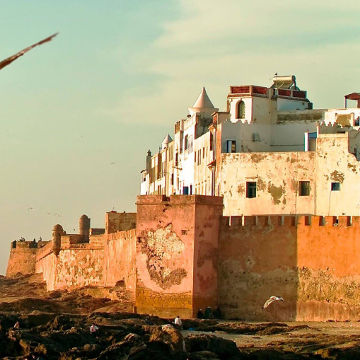
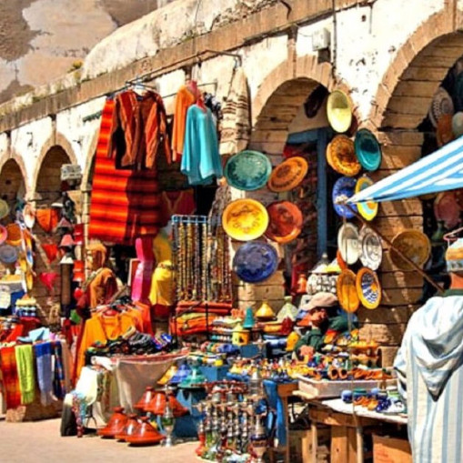
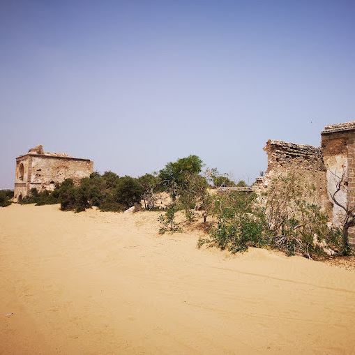

The old city of Essaouira is considered one of the fortified cities of 17th-century Morocco and North Africa, built according to the military engineering principles of that era.

The traditional markets of Essaouira are a maze of narrow alleys filled with handicrafts, spices, and vibrant textiles.

The Gunpowder Tower is a ruined watchtower situated south of the estuary of the Ksab River, near Essaouira, Morocco.
I've only visited Essaouira a few times — but as a Moroccan, I can help you chat with locals, catch their words, and share the traditions we all live by.